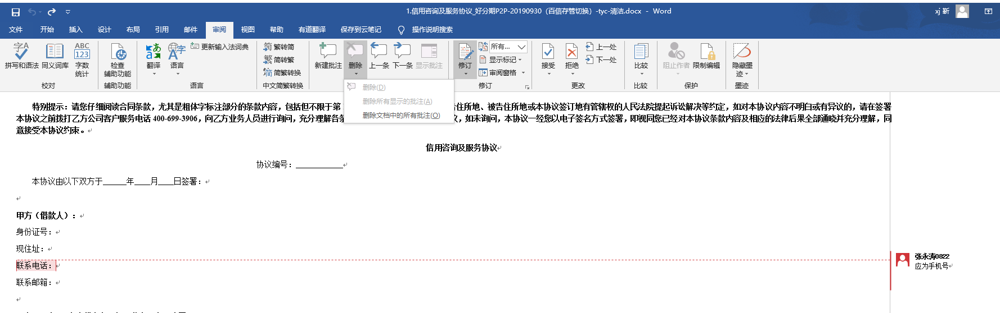
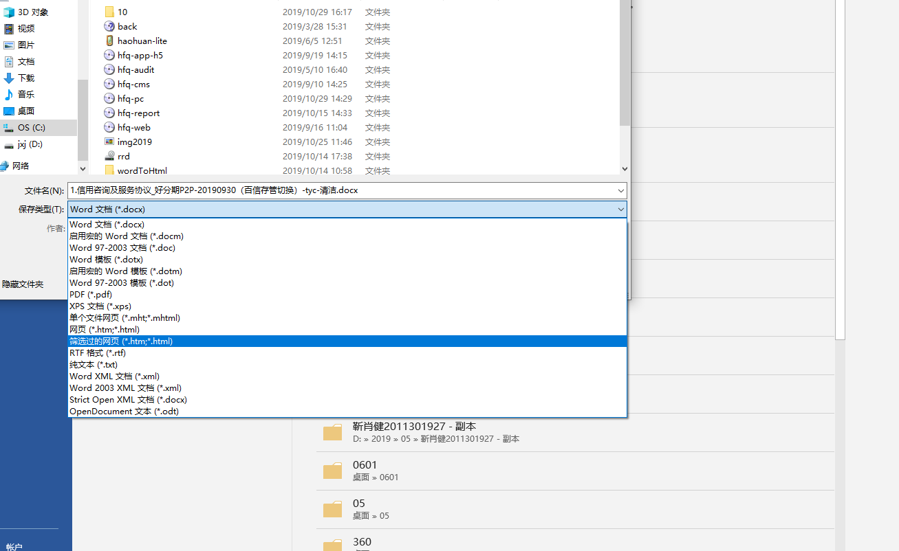
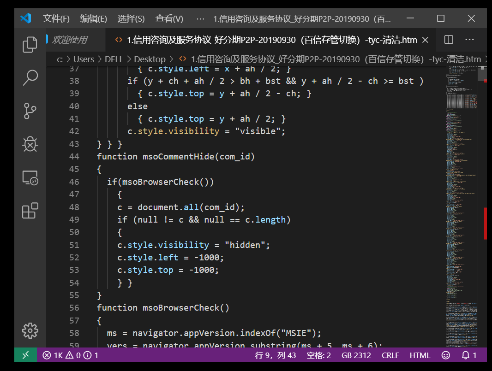
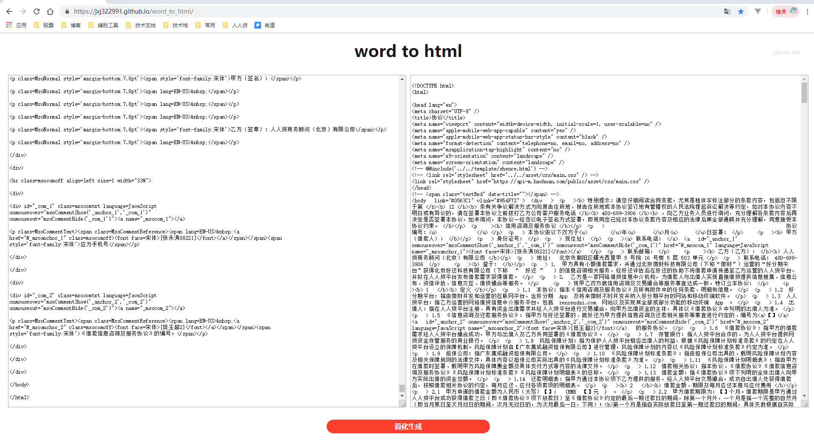
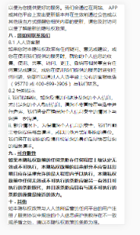
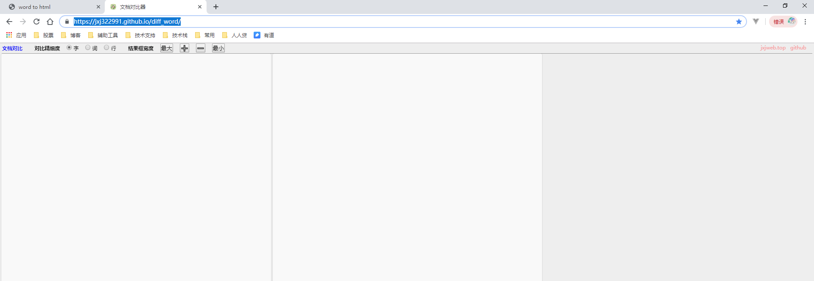

1.打开文档.删除所有批注/标记(很重要,不然生成文档会有多余字段)
2.另存为筛选过的页面
3.编辑器打开页面,选择正确编码格式
4.进入文件简化页面 https://jxj322991.github.io/word_to_html/ 将源代码实用化(word生成源码样式配置信息过多,结构冗余过多,很影响性能,并且过于繁杂不容易插入代码并且缺少生产环境配置信息)
5.讲代码复制粘贴到指定位置 微调样式,插值
6.检查结果 打开对比页面: https://jxj322991.github.io/diff_word/ 粘贴文档/页面文字,进行对比
